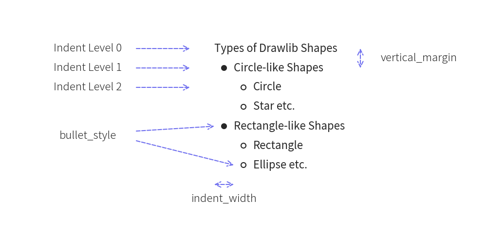

BulletPoints
Class BulletPoints is used for drawing bullet points.
from drawlib.canvas import config
from drawlib.lines import line
from drawlib.smartarts import BulletPoints
from drawlib.text import text
config(width=100, height=48)
def center():
bp = BulletPoints(styles=styles, vertical_margin=4, indent_width=4)
bp.add("Types of Drawlib Shapes")
bp.set_indent(1)
bp.add("Circle-like Shapes")
bp.set_indent(2)
bp.add("Circle")
bp.add("Star etc.")
bp.set_indent(1)
bp.add("Rectangle-like Shapes")
bp.set_indent(2)
bp.add("Rectangle")
bp.add("Ellipse etc.")
bp.draw(xy=(44, 38))
def left():
x1 = 18
x2 = 28
x3 = 39
text((x1, 38), "Indent Level 0", style=styles.light)
line((x2, 38), (x3, 38), style=styles.dashed, arrowhead="->")
text((x1, 34), "Indent Level 1", style=styles.light)
line((x2, 34), (x3, 34), style=styles.dashed, arrowhead="->")
text((x1, 30), "Indent Level 2", style=styles.light)
line((x2, 30), (x3, 30), style=styles.dashed, arrowhead="->")
line((x2, 21), (44, 22), style=styles.dashed, arrowhead="->")
line((x2, 19), (48, 14), style=styles.dashed, arrowhead="->")
text((x1, 20), "bullet_style", style=styles.light)
def others():
line((74, 38), (74, 34), style=styles.dashed, arrowhead="<->")
text((86, 36), "vertical_margin", style=styles.light)
line((44, 10), (48, 10), style=styles.dashed, arrowhead="<->")
text((46, 7), "indent_width", style=styles.light)
center()
left()
others()

As you can see, you can control text style and bullet point styles.
API Specification
BulletPoints()
Args:
- vertical_margin (float): The vertical space between bullet points.
- indent_width (float): The width of the indentation for each level.
- default_style (Union[str, Style, None]): The default text style for the bullet points.
set_indent()
Sets the indentation level for the next bullet point.
Args:
- level (int): The indentation level.
set_bullet_style()
Sets the style and function for drawing bullets at a specific indentation level.
Args:
- indent_level (int): The indentation level to apply the style to.
- function (Callable): The function to draw the bullet shape.
- style (Union[str, Style]): The style to apply to the bullet shape.
- args (dict): Additional arguments to pass to the drawing function.
add()
Adds a bullet point with the specified text and style.
Args:
- text (str): The text for the bullet point.
- style (Union[str, Style, None]): The text style for the bullet point.
draw()
Draws the list of bullet points starting from the specified location.
Args:
xy (Tuple[float, float]): The starting point (x, y) to draw the bullet points.
© 2026 drawlib by Yuichi Ito. Released under the Apache 2.0 License.